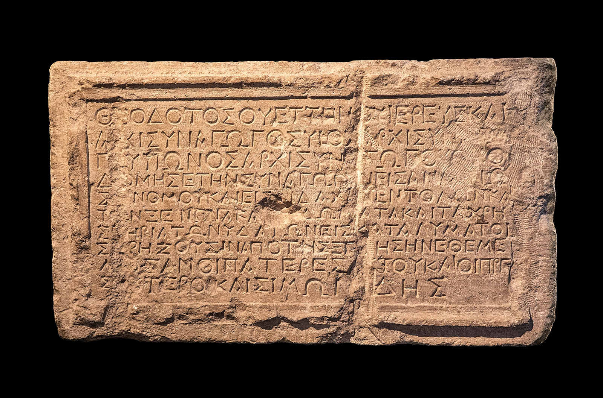

Fotografia de uma estela de calcário do séc. III d.C. de Éfeso (Ásia Menor) com excertos do Didache, o mais antigo catecismo cristão. Crédito: Tim Mackie.Photograph of a 3rd-century CE limestone stele from Ephesus (Asia Minor) with excerpts from the Didache, the earliest Christian catechism. Credit: Tim Mackie.
Ao chegarmos a Mateus 6:1-18, entramos na segunda parte do movimento central do Sermão do Monte. Observe que em toda a extensão do sermão de 5:1-7:29, esta seção de 6:1-21 constitui o centro do centro.As we come to Matthew 6:1-18, we step into the second part of the central movement of the Sermon on the Mount. Notice that in the entire stretch of the sermon from 5:1-7:29, this section of 6:1-21 makes up the center of the center.
Jesus acabou de descrever a relação da sua ética do Reino de Deus com a revelação de Deus na Torá (5:17-48). O ponto principal de Jesus era que o seu ensino não substitui nem contrapõe a vontade de Deus revelada na Torá. Antes, ele cumpre a vontade de Deus e toda a história da Torá e dos Profetas. Em 5:17-48, Jesus mostrou como a "maior justiça" exige que reimaginemos todos os nossos relacionamentos com outras pessoas. Ao nos voltarmos para 6:1-18, Jesus começa a descrever a justiça como o modo como fazemos o certo diante de Deus, isto é, como os seus seguidores devem expressar esta "maior justiça" a Deus. A relação entre 5:17-48 e 6:1-18 poderia então ser representada da seguinte maneira.Jesus has just described the relationship of his Kingdom of God ethic to God’s revelation in the Torah (5:17-48). Jesus’ main point was that his teaching does not replace or counter God’s will revealed in the Torah. Rather, it fulfills God’s will and the entire storyline of the Torah and Prophets. In 5:17-48, Jesus showed how “greater righteousness” requires us to reimagine all of our relationships to other people. As we turn to 6:1-18, Jesus begins describing righteousness as the way that we do right by God, that is, how his followers are to express this “greater righteousness” to God. The relationship between 5:17-48 and 6:1-18 could then depicted in the following way.
| Mateus 5:21-48Matthew 5:21-48 | Mateus 6:1-21Matthew 6:1-21 |
|---|---|
| 6 estudos de caso onde a justiça = fazer o certo diante de outras pessoas6 case studies where righteousness = doing right by other people | 3 estudos de caso onde a justiça = fazer o certo diante de Deus3 case studies where righteousness = doing right by God |
| Ira / Sexo / Divórcio Verdade / Injustiça / Amor ao InimigoAnger / Sex / Divorce Truth-telling / Injustice / Enemy Love |
Generosidade / Oração / JejumGenerosity / Prayer / Fasting |
Justiça e Práticas Religiosas. Criado por Tim Mackie para BibleProject Classroom: A Torá Messiânica (2024).Righteousness and Religious Practices. Created by Tim Mackie for BibleProject Classroom: The Messianic Torah (2024).
O bloco maior de Mateus 6:1-21 tem em si um fluxo de três partes: começa com uma declaração de tese de três linhas que é ilustrada com três estudos de caso, seguida por uma conclusão de três partes.The larger block of Matthew 6:1-21 itself has a three-part flow: It begins with a three-line thesis statement that is illustrated with three case studies, followed by a three-part conclusion.
Mateus 6:1 — Declaração de Tese
• Cuidado, para que você não faça a sua justiça diante das pessoas, com o propósito de ser visto por elas. Se você fizer isso, não terá recompensa do seu Pai nos céus.Matthew 6:1 — Thesis Statement
• Be careful, that you don’t do your righteousness in front of people, for the purpose of being seen by them. If you do, you will have no reward from your Father in the skies.
Mateus 6:2-4 — Generosidade para com os Necessitados
• e o seu Pai … ele o recompensará plenamente.Matthew 6:2-4 — Generous Giving to Those in Need
• and your Father … he will fully reward you.
Mateus 6:5-15 — Oração
• e o seu Pai … ele o recompensará plenamente.Matthew 6:5-15 — Prayer
• and your Father … he will fully reward you.
Mateus 6:16-18 — Jejum
• e o seu Pai … ele o recompensará plenamente.Matthew 6:16-18 — Fasting
• and your Father … he will fully reward you.
Mateus 6:19-21 — Conclusão
• 19 Não ajunte para si tesouros na terra, onde a traça e a larva estragam, e onde os ladrões arrombam e roubam. 20 Antes, ajunte para si tesouros nos céus, onde nem a traça nem a larva estragam, e onde os ladrões não arrombam nem roubam. 21 Porque onde estiver o seu tesouro, ali estará também o seu coração.Matthew 6:19-21 — Conclusion
• 19 Don’t store up treasures for yourself on the land, where moth and rust disfigure, and where thieves can break in and steal. 20 Rather, store up for yourselves treasure in the sky, where neither moth nor rust can disfigure, and where thieves can’t break in and steal. 21 Because wherever your treasure is, there your heart will be also.
Mateus 6:1-21. Tradução e Design Literário por Tim Mackie para BibleProject Classroom: A Torá Messiânica (2024).Matthew 6:1-21. Translation and Literary Design by Tim Mackie for BibleProject Classroom: The Messianic Torah (2024).
A declaração de abertura em 6:1 remete à descrição de Jesus dos seus discípulos como o sal e a luz do mundo, e isto cria uma interação interessante.The opening statement in 6:1 links back to Jesus’ description of his disciples as the salt and light of the world, and this creates an interesting interplay.
Jesus abre este novo movimento sobre a "maior justiça", introduzido em 5:20, com uma tensão produtiva que recorda a sua descrição das comunidades do Reino em 5:16.Jesus opens this new movement on the “greater righteousness,” introduced in 5:20, with a productive tension that recalls his description of the Kingdom communities from 5:16.
A frase repetida "diante de/diante das pessoas" (emprosthen ton anthropon) em ambos os textos levanta uma tensão: espera-se que os seguidores de Jesus demonstrem um conjunto alternativo de valores aos seus vizinhos precisamente através do seu comportamento publicamente visível. Contudo, essa responsabilidade vem com um risco, a saber, o desejo humano de honra e notoriedade pode corromper a justiça de alguém. E ninguém mais saberá disso, exceto Deus.The repeated phrase “in front of/before people” (emprosthen ton anthropon) in both texts raises a tension: Jesus’ followers are supposed to demonstrate an alternate set of values to their neighbors precisely through their publicly visible behavior. However, that responsibility comes with a liability, namely, the human desire for honor and notoriety can corrupt one’s righteousness. And no one else will ever know it, except for God.
"A declaração de Jesus nos coloca em um dilema: boas ações, atos de justiça e retidão, têm que ter um impacto público, pois, como sal e luz, os discípulos necessariamente se relacionam com a vida dos outros. Como então as pessoas podem evitar praticar a sua piedade diante dos outros? … Se a prática se baseia na justiça, tudo bem; se se baseia no interesse próprio, 'para ser visto pelos outros', então não é. Como Jesus fez com as 'extensões', ele está olhando não apenas para a ação, mas também para o motivo por trás dela. Quando motivo e ação trabalham em harmonia, quando a cabeça está alinhada com o coração, então um discípulo está se movendo na direção da 'completude', ou 'perfeição'."“Jesus’ statement puts us in a quandary: good acts, acts of righteousness and justice, have to have a public impact since, as salt and light, the disciples necessarily relate to the lives of others. How then can people avoid practicing their piety before others? … If the practice is based in justice, that’s fine; if it’s based on self-interest, ‘in order to be seen by others,’ then it is not. As Jesus did with the ‘extensions,’ he is looking not only at the action but also the motive behind it. When motive and action work in harmony, when the head is aligned with the heart, then a disciple is moving in the direction of ‘completion,’ or ‘perfection.’”
Levine, Amy-Jill (2020). The Sermon on the Mount: A Beginners Guide to the Kingdom of Heaven. Abingdon Press. 55.Levine, Amy-Jill (2020). The Sermon on the Mount: A Beginners Guide to the Kingdom of Heaven. Abingdon Press. 55.
Observe que a tese em 6:1 começa com uma imagem negativa de pessoas fazendo o certo diante de Deus de maneiras que atraem atenção pública. Jesus traz a linguagem de "recompensa" neste ponto. Como os exemplos deixarão claro, é certo e bom confiar que a devoção de alguém a Deus gerará um benefício futuro. O problema é que as comunidades religiosas tendem a realocar esses benefícios para o presente, o que cria um desejo de ser publicamente visível nos atos de devoção religiosa de alguém. Em contraste, Jesus quer que os seus seguidores foquem nos benefícios que são dados não pelas pessoas, mas pelo seu Pai celestial. E se o seu reino está nos céus (6:1), então também a recompensa futura estará no reino celestial (como em 6:19-21).Notice that the thesis in 6:1 begins with a negative image of people doing right by God in ways that attract public attention. Jesus brings in the language of “reward” at this point. As the examples will make clear, it is right and good to trust that one’s devotion to God will generate a future benefit. The problem is that religious communities tend to relocate those benefits into the present, which creates a desire to be publicly visible in one’s acts of religious devotion. In contrast, Jesus wants his followers to focus on the benefits that are given not by people, but by his heavenly Father. And if his realm is in the skies (6:1), then so also the future reward will be in the sky realm (as in 6:19-21).
O "tesouro no céu" não significa que alguém tem que "ir para o céu" para obter o tesouro. Antes, o céu é uma realidade sempre presente, mas muitas vezes oculta, a realidade mais verdadeira que existe. Dizer que o "tesouro" de alguém está no céu é dizer que ele existe em uma dimensão mais real da realidade do que podemos compreender. E ainda mais, significa que um dia, quando o céu e a terra forem reunidos, o que Jesus chama de "renascimento de todas as coisas" (veja Mat. 19:28), então as recompensas reais de alguém serão reveladas.The “treasure in the sky” does not mean that one has to “go to heaven” to get the treasure. Rather, heaven is an ever-present but often hidden reality, the most true reality that there is. To say one’s “treasure” is in heaven is to say that it exists in a more real dimension of reality than we can comprehend. And even more, it means that one day, when heaven and earth are reunited, what Jesus calls the “rebirth of all things” (see Matt. 19:28), then one’s real rewards will be revealed.
O famoso ditado sobre "tesouros no céu" é, de fato, uma conclusão para toda esta sequência de pensamento. Os "tesouros", quando compreendidos neste contexto, são uma imagem para a recepção acolhedora e a honra que alguém receberá ao chegar à nova criação.The famous saying about “treasures in heaven” is, in fact, a conclusion to this entire sequence of thought. The “treasures,” when understood in this context, are an image for the welcome reception and honor one will receive upon arriving in the new creation.
Jesus selecionou aqui três das principais maneiras pelas quais israelitas fiéis expressaram a sua devoção a Deus no século I. A lista não é exaustiva, como se estas fossem as únicas três maneiras pelas quais uma pessoa pode honrar a Deus. Antes, estes três exemplos estão oferecendo sabedoria ética, pois todos compartilham um retrato central do que a devoção religiosa genuína, um genuíno "fazer o certo diante de Deus", parece. As ilustrações tornam-se sabedoria que pode guiar os seguidores de Jesus a considerar outros aspectos da devoção religiosa que Jesus não menciona.Jesus has here selected three of the primary ways that faithful Israelites expressed their devotion to God in the 1st century. The list is not exhaustive, as if these are the only three ways a person can honor God. Rather, these three examples are offering ethical wisdom in that they all share a core portrayal of what genuine religious devotion, a genuine “doing right by God,” looks like. The illustrations become wisdom that can guide Jesus’ followers to consider other aspects of religious devotion that Jesus doesn’t mention.
Mateus 6:1-4. Tradução e Design Literário por Tim Mackie para BibleProject Classroom: A Torá Messiânica (2024).Matthew 6:1-4. Translation and Literary Design by Tim Mackie for BibleProject Classroom: The Messianic Torah (2024).
O primeiro exemplo é uma expressão clássica da devoção judaica a Deus, que, ao que parece, é inteiramente voltada para outras pessoas. Esta conexão estreita entre "justiça" para com Deus e para com os pobres é uma ênfase única da tradição judaico-cristã.The first example is a classic expression of Jewish devotion to God, which, as it turns out, is entirely aimed at other people. This tight connection between “righteousness” toward God and toward the poor is a unique emphasis of the Jewish-Christian tradition.
A palavra grega eleemosunen (ἐλεημοσύνην, "doação generosa") vem da raiz eleeo, "mostrar misericórdia, demonstrar preocupação", e estava associada a atos concretos de bondade, generosidade e benevolência para com pessoas necessitadas.The Greek word eleemosunen (ἐλεημοσύνην, “generous giving”) comes from the root eleeo, “to show mercy, to demonstrate concern,” and was associated with concrete acts of kindness, generosity, and benevolence to people in need.
No grego judaico, tornou-se um sinônimo próximo de justiça, e tal serviço aos pobres era considerado não apenas um ato de bondade, mas uma demonstração necessária da lealdade de um israelita a Deus.In Jewish Greek, it became a close synonym of righteousness, and such service to the poor was assumed to be not just an act of kindness, but a necessary demonstration of an Israelite’s loyalty to God.
Observe a equação entre o pobre e Yahweh. A generosidade para com um é uma expressão de generosidade para com o outro. Não são coisas diferentes.Notice the equation between the poor and Yahweh. Generosity to one is an expression of generosity to the other. They are not different things.
"Aquele que dá generosamente ao necessitado dá figurativamente um empréstimo ao Senhor, presumivelmente porque a honra do Senhor está ligada aos pobres, pois ele os fez e eles também são a sua imagem (14:31; 17:5; 22:2). O seu Criador justo e gracioso assume sobre si a dívida deles e assim ele retribuirá ao credor em plenitude."“The one who gives generously to the destitute figuratively gives a loan to the Lord presumably because the Lord’s honor is tied up with the poor for he made them and they too are his image (14:31; 17:5; 22:2). Their just and gracious Creator takes it upon himself to assume their indebtedness and so he will repay the lender in full.”
Waltke, Bruce K. (2005). The Book Of Proverbs: Chapters 15–31 (The New International Commentary on the Old Testament). Eerdmans. 111.Waltke, Bruce K. (2005). The Book Of Proverbs: Chapters 15–31 (The New International Commentary on the Old Testament). Eerdmans. 111.
Isto também explica por que a justiça tem a sua expressão natural na assistência aos pobres na Bíblia Hebraica.This also makes sense of why righteousness has its natural expression in assistance for the poor in the Hebrew Bible.
Bruce Waltke, em um estudo exaustivo de tsedeq e mishpat nos Profetas e Provérbios, oferece este resumo: "Os justos são aqueles que estão dispostos a se prejudicarem para a vantagem da sua comunidade; os ímpios são aqueles que estão dispostos a prejudicar a comunidade para se beneficiarem a si mesmos."Bruce Waltke, in an exhaustive study of tsedeq and mishpat in the Prophets and Proverbs, offers this summary: “The righteous are those who are willing to disadvantage themselves to the advantage of their community; the wicked are those who are willing to disadvantage the community to advantage themselves.”
Waltke, Bruce K. (2004). The Book Of Proverbs: Chapters 1-15 (The New International Commentary on the Old Testament). Eerdmans. 96.Waltke, Bruce K. (2004). The Book Of Proverbs: Chapters 1-15 (The New International Commentary on the Old Testament). Eerdmans. 96.
Jesus está, é claro, endossando plenamente e expressando esta mesma visão, embora ele avise os seus seguidores que a generosidade de alguém pode ser corrompida pela introdução do interesse próprio e de um desejo de honra pública.Jesus is, of course, fully endorsing and expressing this same view, though he warns his followers that one’s generosity can be corrupted by the introduction of self-interest and a desire for public honor.
No dia de Jesus, como no nosso, atos públicos de generosidade eram a principal maneira pela qual uma pessoa aumentava o seu status e honra públicos. Esta honra poderia então ser usada como alavanca contra outros enquanto alguém subia a escada do status e do prestígio.In Jesus’ day, as in our own, public acts of generosity were the primary way a person increased their public status and honor. This honor could then be used as leverage over against others as one climbed the ladder of status and prestige.
A inscrição mais antiga de sinagoga é uma placa memorial do doador do edifício.The earliest synagogue inscription is a memorial plaque for the building’s donor.
Zeigarnik, Andrey (2019). Wikipedia.Zeigarnik, Andrey (2019). Wikipedia.
Mateus 6:5-15. Tradução e Design Literário por Tim Mackie para BibleProject Classroom: A Torá Messiânica (2024).Matthew 6:5-15. Translation and Literary Design by Tim Mackie for BibleProject Classroom: The Messianic Torah (2024).
Este é o primeiro uso da palavra "hipócrita" por Jesus (grego: hupokrites), e observe que NÃO significa "dizer uma coisa e fazer outra". Antes, descreve fazer a coisa certa com o motivo e o desejo errados.This is Jesus’ first use of the word “hypocrite” (Greek: hupokrites), and notice it does NOT mean ‘saying one thing and doing another.’ Rather, it describes doing the right thing with the wrong motive and desire.
A oração estava entrelaçada na vida do povo de Deus e era uma das principais maneiras pelas quais eles "faziam o certo diante de Deus", através da prática de honrá-lo pela sua generosidade e muitos dons (louvor) e através de clamar a ele por ajuda e livramento (pedidos e intercessão).Prayer was woven into the life of God’s people, and was one of the key ways they “did right by God,” through the practice of honoring him for his generosity and many gifts (praise) and through calling out to him for help and deliverance (requests and intercession).
No dia de Jesus, a oração era uma expressão espontânea de conexão com Deus e também estruturada como um ritmo fixo de vida. Há indícios dentro da Bíblia Hebraica de que as liturgias de oração israelitas aconteciam de manhã, à tarde e à noite.In Jesus’ day, prayer was a spontaneous expression of connection to God, and also structured as a fixed rhythm of life. There are hints within the Hebrew Bible that Israelite prayer liturgies took place in the morning, afternoon, and evening.
No período do exílio, começamos a ver menção a ritmos de oração três vezes ao dia. E se alguém por acaso estivesse em público, então o seu momento de oração se tornava uma realidade muito visível e pública. Isto ainda é comum em muitas culturas hoje.In the period of the exile, we begin to see mention of prayer rhythms three times a day. And if one happened to be out in public, then one’s prayer time became a very visible and public reality. This is still common in many cultures today.
"Repetição sem sentido" é o grego battologeo (βατταλογέω).“Meaningless repetition” is the Greek battologeo (βατταλογέω).
Há debate sobre a origem e o significado desta palavra, que é emparelhada com "muitas palavras" (polulogia).There is debate over the origin and meaning of this word, which is paired with “many-words” (polulogia).
"gaguejar, ou falar de uma maneira que repete as mesmas palavras uma e outra vez sem pensar." (BDAG)“to stutter, or speak in a way that repeats the same words over and over again without thinking.” (BDAG)
Usada fora do Novo Testamento, esta raiz grega é usada para descrever um impedimento de fala (battos, veja Liddell-Scott em βάττος).Used outside the New Testament, this Greek root is used to describe a speech impediment (battos, see Liddell-Scott on βάττος).
"Pelo menos três explicações da etimologia [desta palavra] foram oferecidas. É impossível decidir entre elas. (1) Pode ser uma forma híbrida, derivando do aramaico bāṭēl ('vazio, inane') + λόγος (cf. BDF § 40, citando Blass; veja sys.h). bāṭēl aparece em um papiro aramaico de Murabbaʿt com o significado de ineficaz; veja Mur 25a 1:7. Também da esfera semítica vem o hebraico bāṭāʾ = 'falar precipitadamente, sem pensar' (Lev. 5:4; Sl. 106:33). (2) Segundo Schlatter (p. 206), a palavra não literária refere-se à futilidade de juntar ramos de sarça e assim à futilidade do esforço em geral. βάτος = 'sarça' e λέγειν pode significar 'juntar'. (3) Na opinião de G. Delling (TWNT 1, p. 598) βατταλογέω foi simplesmente formulada por analogia com a mais conhecida βατταρίζω (= 'gaguejar, tartamudear') em conexão com -λογεῖν."“At least three explanations of [this word’s] etymology have been offered. It is impossible to decide between them. (1) It might be a hybrid form, deriving from the Aramaic bāṭēl (‘empty, inane’) + λόγος (cf. BDF § 40, citing Blass; see sys.h). bāṭēl appears in an Aramaic papyrus from Murabbaʿt with the meaning of ineffectual; see Mur 25a 1:7. Also from the Semitic sphere is the Hebrew bāṭāʾ = ‘speak rashly, thoughtlessly’ (Lev. 5:4; Ps. 106:33). (2) According to Schlatter (p. 206), the non-literary word refers to the futility of gathering bramble twigs and thus to futile exertion in general. βάτος = ‘bramble’ and λέγειν can mean ‘to gather’. (3) In the opinion of G. Delling (TWNT 1, p. 598) βατταλογέω was simply formulated on the analogy of the better known βατταρίζω (= ‘stammer, stutter’) in connection with -λογεῖν.”
Davies, W. D. & Allison Jr., Dale C. (2004). Matthew, vol. 1 (International Critical Commentary). T&T Clark International. 587-588.Davies, W. D. & Allison Jr., Dale C. (2004). Matthew, vol. 1 (International Critical Commentary). T&T Clark International. 587-588.
É possível que Jesus esteja recorrendo a uma tradição com raízes na Bíblia Hebraica, sobre oração que é franca, não adornada com vocabulário sofisticado e floreios retóricos longos:It is possible that Jesus is tapping into a tradition with roots in the Hebrew Bible, about prayer that is frank, not adorned with fancy vocabulary and long-form rhetorical flourish:
Há lugares onde orações desnecessariamente longas ou repetitivas são alvo de crítica na tradição bíblica.There are places where unnecessarily long or repetitive prayers come in for critique in the biblical tradition.
"Não são as 'orações prolixas' que são criticadas como tais. Antes, elas são criticadas como um meio de obter audiência com Deus. A justificativa paralela no v. 8b* repete este escopo: o tema central deste ditado não é o comprimento de uma oração, mas se ela é ouvida. Orações longas não são necessárias, porque Deus sabe o que as pessoas precisam antes mesmo de pedirem. A questão não é simplesmente prevenir a manipulação, nem é que Deus sabe tudo de qualquer maneira e que a oração não é mais necessária de modo algum; é que Deus no seu amor está com as pessoas antes de elas orarem e assim as alivia da necessidade de orar orações prolixas."“It is not ‘long-winded prayers that are criticized as such. Rather they are criticized as a means of gaining a hearing with God. The parallel rationale in v. 8b* repeats this scope: the central theme of this saying is not a prayer’s length but whether it is heard. Long prayers are not necessary, because God knows what people need before they even ask. The issue is not simply preventing manipulation, nor is it that God knows everything anyway and that prayer is no longer necessary at all; it is that God in his love is with people before they pray and thus relieves them of the need to pray long-winded prayers.”
Luz, Ulrich (2007). Matthew 1–7: A Commentary (Hermeneia). Augsburg Fortress Publishing. 306.Luz, Ulrich (2007). Matthew 1–7: A Commentary (Hermeneia). Augsburg Fortress Publishing. 306.
"Jesus tem os gentios em mente com o seu acúmulo dos nomes dos seus deuses. Às vezes os gentios pareciam esperar que um deus estivesse acordado ou ouvindo—e não é errado aqui humanizar esses deuses porque é assim que eles parecem em textos como a Ilíada e a Odisseia. Catulo escreveu um poema sobre a deusa Diana; a quarta linha a partir do final ilustra perfeitamente o problema que Jesus vê nas orações gentias (em itálico):“Jesus has Gentiles in mind with their piling up of the names of their gods. Sometimes the Gentiles seemed to be hoping a god would be awake or listening—and it is not wrong here to humanize these gods because that his how they come off in texts like The Iliad and The Odyssey. Catullus wrote a poem about the goddess Diana; the fourth line from the end perfectly illustrates the problem Jesus sees in Gentile prayers (put in italics):
A observação de Jesus sobre a oração gentia é comum no judaísmo: "não fique balbuciando como os pagãos." A palavra grega por trás do nosso "balbucio" é um mistério quando se trata das suas origens, mas essa palavra grega (battalogeō) cria a impressão de balbucio sem sentido. No final deste versículo, as palavras "muitas palavras" (polylogia) são usadas, e isso nos permite combiná-la com "balbucio" para ver a crítica de Jesus dirigida a uma tagarelice ininterrupta na presença de Deus. Jesus foca na intenção. A intenção pagã é a crença de que se forem prolixos ou orarem por tempo suficiente ou se mostrarem a sua sinceridade continuando sem parar, Deus os ouvirá. O que empurrava a ansiedade gentia na oração era a suscetibilidade à ofensa e a volubilidade dos deuses. Jesus ensina a bondade e o amor de Deus, aqui falando do cuidado amoroso de Deus por todos (5:43-48) e chamando Deus de "Pai".Jesus’ observation about Gentile prayer is common in Judaism: “do not keep on babbling like pagans.” The Greek word behind our “babble” is a bit of a mystery when it comes to its origins, but that Greek word (battalogeō) creates the impression of mindless babbling. At the end of this verse the words “many words” (polylogia) is used, and it permits us to combine it with “babble” to see Jesus’ criticism directed at a nonstop prattling in the presence of God. Jesus focuses on intent. The pagan intent is the belief that if they are long-winded or pray long enough or if they show their sincerity by going on and on, God will hear them. Pushing Gentile anxiety in prayer was the offendability and capriciousness of the gods. Jesus teaches the goodness and love of God, here speaking of God’s loving care of all (5:43–48) and calling God “Father.”
Contrariamente às percepções pagãs de quem Deus é, o Pai de Jesus conhece as necessidades antes mesmo de o povo de Deus pedir. Talvez esta ideia venha de uma das predições sobre os novos céus e a nova terra de Isaías 65:24:Contrary to pagan perceptions of who God is, Jesus’ Father knows needs before God’s people ask. Perhaps this idea is from one of the predictions about the new heavens and the new earth from Isaiah 65:24:
Isto não diz que o Pai sabe o que pedirão antes de pedirem, mas que o Pai conhece as suas necessidades antes de as darem a conhecer. A intenção de Jesus não é desencorajar os seus seguidores de suplicarem ao Pai, mas de pensarem que podem manipular ou bajular Deus. Isto significa que a principal intenção da Oração do Senhor é revelar uma oração curta em contradição com as orações longas dos pagãos. Poucas orações dizem tanto em tão poucas palavras, mas bons exemplos de orações "curtas" podem ser encontrados nos Salmos, nenhum talvez mais notável do que o Salmo 23."This does not say the Father knows what they will ask before they ask but that the Father knows their needs before they make them known. Jesus’ intent is not to discourage his followers from petitioning the Father but from thinking they can manipulate or cajole God. This means that the major intent of the Lord’s Prayer is to reveal a short prayer in contradiction to the long prayers of the pagans. Few prayers say so much in such few words, but good examples of “short” prayers can be found in the Psalms, none perhaps more notable than Psalm 23.”
McKnight, Scot (2013). Sermon on the Mount (The Story of God Bible Commentary). Zondervan. 171-172.McKnight, Scot (2013). Sermon on the Mount (The Story of God Bible Commentary). Zondervan. 171-172.
Mateus 6:16-18. Tradução e Design Literário por Tim Mackie para BibleProject Classroom: A Torá Messiânica (2024).Matthew 6:16-18. Translation and Literary Design by Tim Mackie for BibleProject Classroom: The Messianic Torah (2024).
O jejum era uma parte padrão da vida religiosa israelita e depois judaica, e era uma expressão importante de devoção a Deus. Mas o que significa jejuar?Fasting was a standard part of Israelite and later Jewish religious life, and it was an important expression of devotion to God. But what does fasting mean?
O jejum é uma resposta de corpo inteiro a um momento sério e sagrado na vida de uma pessoa ou comunidade. Quando uma pessoa ou grupo percebe que Deus estava revelando os seus propósitos através de um conjunto de circunstâncias, a resposta normal é parar de comer por um período de tempo.Fasting is a whole-body response to a serious and sacred moment in a person’s life or community. When a person or group realizes that God was revealing his purposes through a set of circumstances, the normal response is to stop eating for a period of time.
O principal mal-entendido que a maioria das pessoas na tradição cristã tem é que concebem o jejum como instrumental, uma tentativa de mostrar a Deus que sou sério sobre algo, e espero que o meu jejum o obrigue a responder à minha necessidade ou pedido.The main misunderstanding most people in the Christian tradition have is that they conceive of fasting as instrumental, an attempt to show God that I am serious about something, and I hope that my fasting will compel him to respond to my need or request.
No retrato bíblico, as pessoas jejuam quando algo aconteceu, e esse algo é visto como um momento sagrado ou doloroso que exige que o povo de Deus pare a vida normal, foque no que é mais importante e se conecte a Deus a partir de um lugar de total necessidade e rendição.In the biblical portrait, people fast when something has happened, and that something is viewed as a sacred or grievous moment that requires God’s people to stop normal life, to focus on what is most important, and connect to God from a place of total need and surrender.
"O jejum é uma escolha de não comer por um período designado de tempo porque o momento é tão sagrado e tão sério que satisfazer o apetite físico mais básico de alguém diminuiria a sua seriedade e profanaria o seu caráter santo. … O jejum é uma maneira de focar a nossa atenção em um momento ou evento sério na vida e evitar a indulgência da comida nos faz lembrar da nossa fragilidade e dependência de Deus."“Fasting is a choice not to eat for designated period of time because the moment is so sacred and so serious that satisfying one’s most basic physical appetite would detract from its seriousness and profane its holy character. … Fasting is a way of focusing our attention on a serious moment or event in life, and avoiding the indulgence of food makes us remember our fragility and dependence upon God.”
McKnight, Scot (2010). Fasting: The Ancient Practice. Thomas Nelson. 19-20.McKnight, Scot (2010). Fasting: The Ancient Practice. Thomas Nelson. 19-20.
Quando alguém está doente ou morreu, ou quando houve uma grande derrota ou um surto de violência.When someone is sick or has died, or when there has been a major defeat or an outbreak of violence.
O próprio Jesus jejuou por 40 dias após o seu batismo, durante um intenso período de discernimento e teste sobre a sua futura vocação.Jesus himself fasted for 40 days after his baptism, during an intense period of discernment and testing about his future vocation.
O próprio jejum de Jesus ecoa o jejum de 40 dias no deserto de Moisés e Elias.Jesus’ own fasting echoes the 40-day wilderness fast of both Moses and Elijah.
Observe que no Sermão, Jesus não minimiza o jejum nem diz que não é importante. De fato, as práticas judaicas de jejum foram totalmente adotadas nas primeiras comunidades cristãs.Notice that in the Sermon, Jesus does not downplay fasting or say it’s not important. In fact, the Jewish practices of fasting were wholly adopted in the early Christian communities.
Na menção mais antiga do jejum fora do Novo Testamento, o Didaquê (uma regra de vida da igreja primitiva) convoca os novos convertidos ao cristianismo a jejuar por um dia inteiro antes do seu batismo e semanalmente.In the earliest mention of fasting outside the New Testament, the Didache (an early church rule of life) calls on new converts to Christianity to fast for one whole day before their baptism, and on a weekly basis.
"7:4 Mas, antes do batismo, que jejuem aquele que batiza e aquele que vai ser batizado, e quaisquer outros que possam fazê-lo. E você exigirá que a pessoa que está sendo batizada jejue por um ou dois dias."“7:4 But, before the baptism, let the one who baptizes and the one to be baptized fast, and any others who are able to do so. And you shall require the person being baptized to fast for one or two days.”
Glimm, Francis (1947). “The Didache or Teaching of the Twelve Apostles.” The Apostolic Fathers (The Fathers of the Church, vol 1). The Catholic University of America Press. 177.Glimm, Francis (1947). “The Didache or Teaching of the Twelve Apostles.” The Apostolic Fathers (The Fathers of the Church, vol 1). The Catholic University of America Press. 177.
"8:1-3 Mas não deixem os seus jejuns serem com os hipócritas; pois eles jejuam na segunda e na quinta-feira; mas vocês jejuarão na quarta e na sexta-feira. 2 E não orem como os hipócritas, mas como o Senhor dirigiu no seu Evangelho, 'Assim orareis: "Pai nosso que estais no céu, santificado seja o vosso nome, venha o vosso reino, seja feita a vossa vontade na terra assim como no céu; dai-nos hoje o nosso pão do alto, e perdoai-nos a nossa dívida assim como nós também perdoamos aos nossos devedores, e não nos deixeis cair em tentação, mas livrai-nos do mal," pois vosso é o poder e a glória para sempre. 3 Três vezes ao dia orai assim.'"“8:1-3 But do not let your fasts be with the hypocrites; for they fast on Monday and Thursday; but you shall fast on Wednesday and Friday. 2 And do not pray as the hypocrites, but as the Lord directed in His Gospel, ‘Thus shall you pray: “Our Father in heaven, hallowed be Thy name, Thy kingdom come, Thy will be done on earth just as in heaven; give us this day our bread from above, and forgive us our debt as we also forgive our debtors, and lead us not into temptation, but deliver us from evil,”’ for Thine is the power and glory forever. 3 Three times in the day pray thus.”
Glimm, Francis (1947). “The Didache or Teaching of the Twelve Apostles.” The Apostolic Fathers (The Fathers of the Church, vol. 1). The Catholic University of America Press. 177-178.Glimm, Francis (1947). “The Didache or Teaching of the Twelve Apostles.” The Apostolic Fathers (The Fathers of the Church, vol. 1). The Catholic University of America Press. 177-178.
Curiosamente, ao longo da história, o jejum é um fenômeno quase universal nas culturas humanas. Embora desempenhe uma variedade de papéis únicos de cultura para cultura, há algumas constantes.Interestingly, throughout history, fasting is a nearly universal phenomenon in human cultures. While it plays a variety of unique roles from culture to culture, there are a few constants.
Os jejuns são frequentemente rituais iniciáticos, de transição (da felicidade para o luto, da vida para a morte), e os jejuns são uma resposta a ou preparação para um encontro com o divino.Fasts are often initiatory, transitional rituals (from happiness into mourning, from life into death), and fasts are a response to or preparation for an encounter with the divine.
O jejum tem uma variedade de efeitos no corpo e na mente humanos, que os biólogos reconhecem há muito tempo. (Veja o mundo de Rupert Sheldrake, Ways to Go Beyond and Why They Work: Seven Spiritual Practices in a Scientific Age, cap. 3 "Jejuar").Fasting has a variety of effects on the human body and mind, which biologists have long recognized. (See the world of Rupert Sheldrake, Ways to Go Beyond and Why They Work: Seven Spiritual Practices in a Scientific Age, ch. 3 “Fasting”).
Em muitas espécies, incluindo humanos, reduzir o suprimento de alimentos aumenta a expectativa de vida (em moscas da fruta, camundongos e humanos).In many species, including humans, reducing the food supply increases lifespan (in fruit flies, mice, and humans).
O jejum treina os nossos corpos em um padrão muito antigo no desenvolvimento humano: recorrer às reservas de gordura do nosso corpo para obter energia, porque o suprimento de alimentos era frequentemente intermitente.Fasting trains our bodies in a very ancient pattern in human development: drawing upon our bodies’ fat stores for energy, because food supply was often intermittent.
O jejum induz um estado de cetose (quando o seu corpo começa a queimar gordura para obter energia em vez de glicose da sua dieta). A cetose libera um "ácido cetônico" no sangue (ácido beta-hidroxibutírico, BHB) e é semelhante ao ácido gama-aminobutírico (GABA), o neurotransmissor mais importante do cérebro.Fasting induces a state of ketosis (when your body starts burning fat for energy instead of glucose from your diet). Ketosis releases a “ketone acid” into the blood (beta-hydroxy butyric acid, BHB), and is similar to gamma-amino butyric acid (GABA), the most important neurotransmitter in the brain.
"O GABA é às vezes chamado de neurotransmissor do 'bem-estar', e níveis aumentados de GABA podem muito bem estar por trás de alguns dos efeitos benéficos da cetose na redução da ansiedade e do estresse e no fornecimento de melhor foco mental."“GABA is sometimes called a ‘feel-good’ neurotransmitter, and increased levels of GABA may well underlie some of the beneficial effects of ketosis in reducing anxiety and stress, and giving better mental focus.”
Sheldrake, Rupert (2019). Ways to Go Beyond And Why They Work: Seven Spiritual Practices in a Scientific Age. Monkfish Book Publishing. 98.Sheldrake, Rupert (2019). Ways to Go Beyond And Why They Work: Seven Spiritual Practices in a Scientific Age. Monkfish Book Publishing. 98.
Tudo isto tem uma conexão interessante com o papel do jejum como preparação para um encontro com o divino, ou criando espaço para um encontro mais intenso:This all has an interesting connection to the role of fasting as preparing oneself for an encounter with the divine, or creating space for a more intense encounter:
Na literatura apocalíptica do judaísmo do Segundo Templo, o jejum tornou-se uma maneira consistente de os visionários responderem ou convidarem novos apocalipses: veja 2 Baruque 5:5-57, Ascensão de Isaías 2:7; 2 Esdras 5:13.In apocalyptic literature of Second Temple Judaism, fasting became a consistent way that visionaries responded to or invited further apocalypses: see 2 Baruch 5:5-57, Ascension of Isaiah 2:7; 2 Esdras 5:13.
Mateus 6:19-24. Tradução e Design Literário por Tim Mackie para BibleProject Classroom: A Torá Messiânica (2024).Matthew 6:19-24. Translation and Literary Design by Tim Mackie for BibleProject Classroom: The Messianic Torah (2024).
Como você descreveria a diferença entre Jesus dizer "deixe a sua luz brilhar diante das pessoas ... para que possam ver" em Mateus 5:16 e "não faça a sua justiça diante das pessoas com o propósito de ser visto" em Mateus 6:1?How would you describe the difference between Jesus saying “let your light shine before people ... so they can see” in Matthew 5:16 and “don’t do your righteousness in front of people for the purpose of being seen” in Matthew 6:1?
Mateus 5:3-7:27. Tradução e Design Literário por Tim Mackie para BibleProject Classroom: A Torá Messiânica (2024).Matthew 5:3-7:27. Translation and Literary Design by Tim Mackie for BibleProject Classroom: The Messianic Torah (2024).